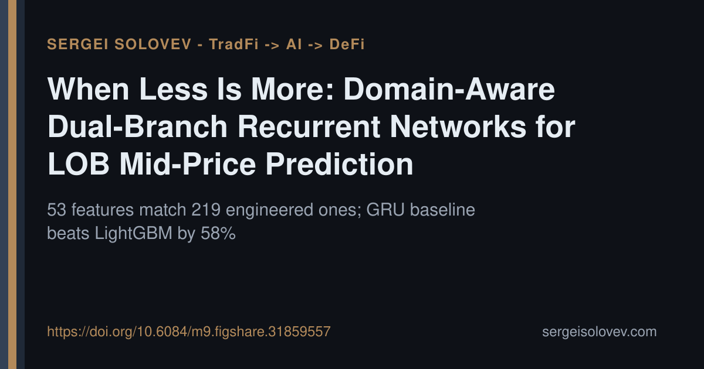

A common assumption in applied ML: more features and ensemble diversity improve generalization. Two findings in this LOB work challenge that directly.
We trained models on limit order book data — 12,165 sequences, 12.1M timesteps — to predict short-term mid-price movements. First, a unidirectional GRU with 53 raw features achieves statistically equivalent performance to one trained on 219 engineered features (rolling statistics, exponential moving averages, lag/difference transforms). The recurrent hidden state appears to implicitly learn the same temporal structure that hand-crafted features encode explicitly — a "feature sufficiency" effect worth taking seriously before investing in feature pipelines.
Second, combining a GRU with LightGBM consistently degraded prediction quality — what we call a "negative ensemble effect." Model diversity does not help when the components represent structurally incompatible inductive biases.
Our domain-aware architecture, DA-BiGRU-CNN, addresses the problem differently: it separates price and volume into dedicated bidirectional GRU branches, then fuses representations through a multi-scale convolutional bottleneck (kernels k=3,5,7). The GRU baseline alone achieves a weighted Pearson correlation of 0.266 — 58% above LightGBM.
The practical implication extends to DeFi. On-chain LOB protocols face the same microstructure dynamics with tighter latency budgets, where leaner architectures carry real operational value.
https://doi.org/10.6084/m9.figshare.31859557
#QuantFinance #ML #DeFi